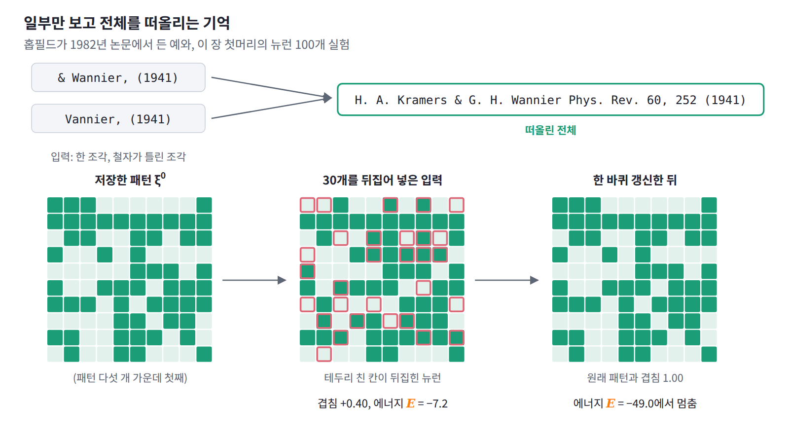
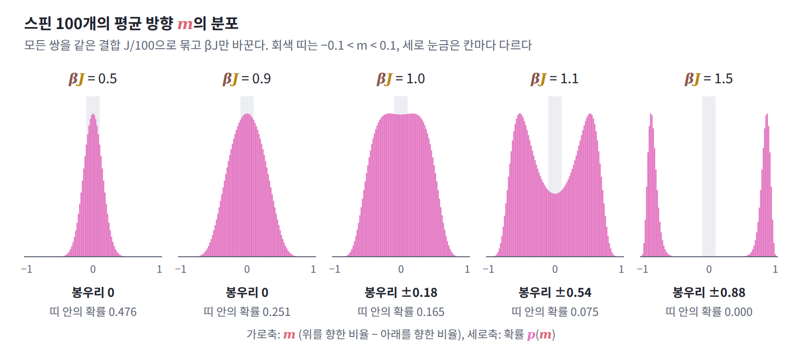
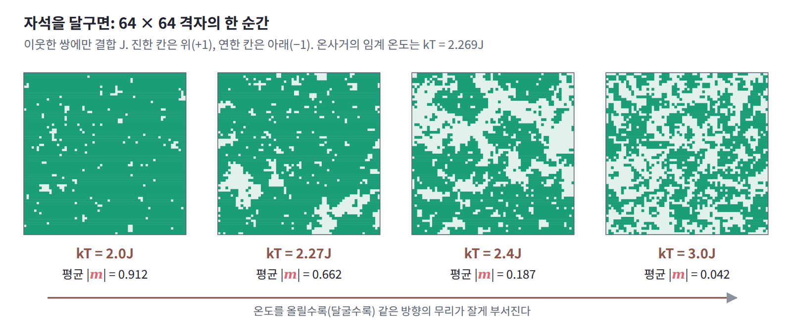
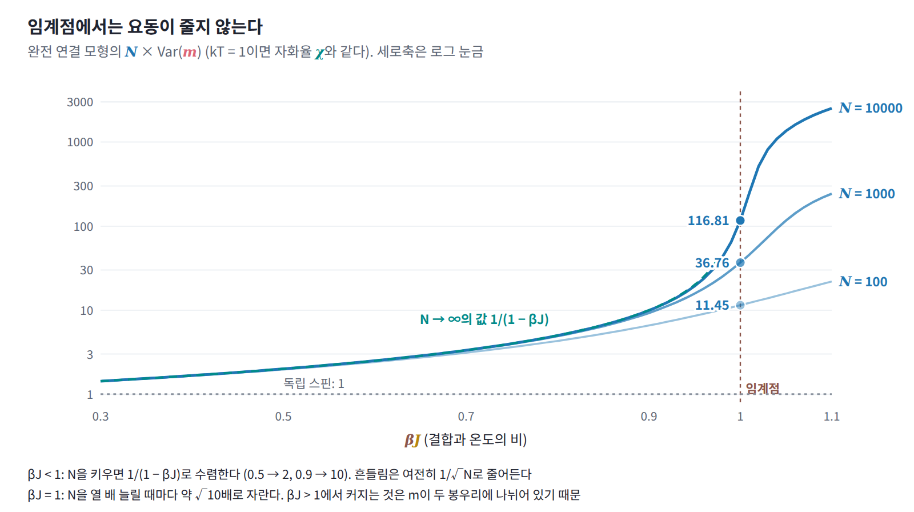
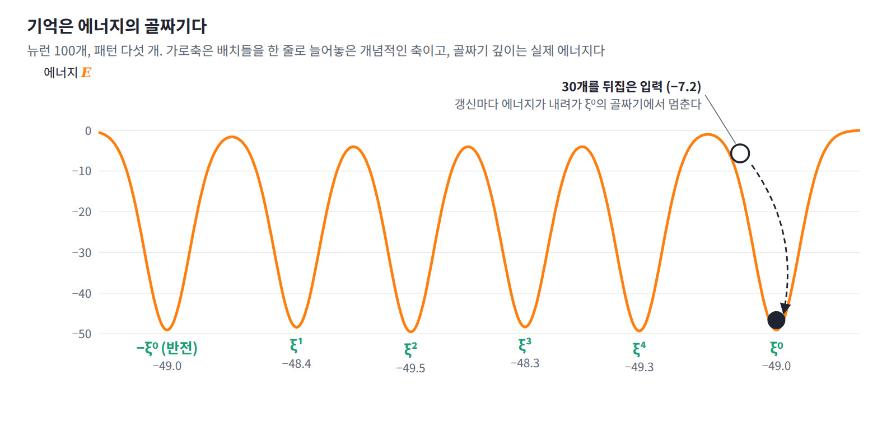
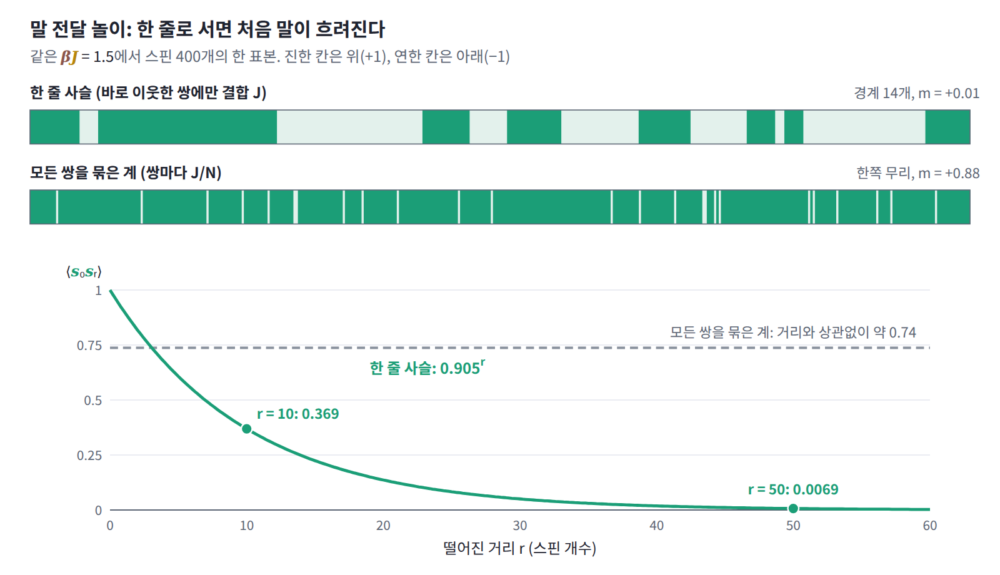

11장 — 이징 모형과 상전이
이 장의 물음
뉴런 100개짜리 홉필드 네트워크를 만들어 보자. 뉴런마다 켜짐(+1)과 꺼짐(−1) 두 상태만 있고, 무작위로 만든 ±1 패턴 다섯 개를 「함께 켜지는 뉴런 쌍의 결합을 키운다」는 헤브 규칙으로 결합 행렬에 새긴다. 그런 다음 첫 번째 패턴에서 100개 가운데 30개를 뒤집어 넣고, 뉴런을 하나씩 골라 다른 뉴런들이 보내는 입력 합의 부호로 맞추는 일을 되풀이한다. 한 바퀴를 돌고 나면 뒤집혔던 30개가 모두 제자리로 돌아와 원래 패턴이 그대로 나오고, 그동안 네트워크의 에너지는 −7.2에서 −49.0으로 내려간 뒤 더 움직이지 않는다. 신기한 것은 패턴을 통째로 뒤집어서 넣었을 때다. 이때 네트워크는 원래 패턴이 아니라 모든 부호가 반대인 패턴으로 모이는데, 그것도 기억된 상태라는 듯 에너지가 똑같이 −49.0이다.
저장하는 패턴을 늘리면 기억은 무너지는데, 무너지는 모양이 흥미롭다. 입력의 10%를 뒤집어 넣고 복원된 결과가 원래 패턴과 얼마나 겹치는지(겹침, 1이면 완전 복원)를 재면, 뉴런 1000개에서는 패턴 수가 뉴런 수의 0.10배일 때 0.997, 0.14배일 때 0.935이다가 0.20배가 되면 0.342로 떨어진다. 뉴런 100개에서는 같은 비율에서 0.996, 0.955, 0.784로 훨씬 완만하게 내려간다. 결합을 정해 주었을 뿐인데 뉴런들은 어떻게 한 패턴으로 함께 모이며, 기억은 왜 조금씩이 아니라 한꺼번에, 그것도 네트워크가 클수록 더 갑자기 무너질까?
같은 일은 가장 단순한 계에서도 일어난다. 위나 아래만 향할 수 있는 스핀 100개의 모든 쌍을 같은 결합으로 묶어 두면, 결합이 약할 때는 스핀 전체의 평균 방향이 0 근처에 모이지만 결합이 어느 정도를 넘으면 평균 방향의 분포가 +0.88과 −0.88 두 곳으로 갈라진다. 에너지는 모든 스핀을 뒤집어도 그대로인데 계는 둘 중 한쪽을 골라 머문다. 홉필드 네트워크가 패턴과 그 반전을 함께 기억하는 것도 이와 닮았다. 이 장은 다음 물음들에 차례로 답한다.
- 쌍마다 아주 약한 결합뿐인데, 무엇이 스핀들을 한쪽으로 모으는가? 모이기 시작하는 결합의 세기는 정확히 어디인가?
- 그 변화는 왜 스핀이 많을수록 더 갑자기 일어나는가?
- 모든 스핀을 뒤집어도 에너지가 같다면, 계는 왜 한쪽에만 머무는가?
- 변화가 일어나는 자리 근처에서 스핀들은 얼마나 흔들리고, 바깥에서 조금 밀면 얼마나 따라오는가?
- 데이터에서 뉴런 쌍이 함께 켜지는 정도를 보고 결합을 거꾸로 배울 수 있는가?
역사: 자석이 자성을 잃는 온도
쇠붙이 자석을 불에 달구면 어느 온도에서 자성이 사라지고, 식히면 다시 자석이 될 수 있다. 이 온도는 그것을 정리한 사람의 이름을 따 퀴리 온도라 부르며, 철은 약 770°C다. 원자 하나하나가 작은 자석이라는 것까지는 받아들여졌지만, 이웃한 원자 자석들이 같은 방향을 좋아한다는 단순한 규칙만으로 이런 급격한 변화가 설명되는지는 오랫동안 풀리지 않았다. 답이 나온 뒤 같은 모형은 뇌의 기억을 설명하는 모형으로 옮겨 갔다.
| 연도 | 사람 | 내용 |
|---|---|---|
| 1895 | 퀴리 | 강자성체가 일정한 온도 위에서 자성을 잃는다는 것을 박사 논문에서 정리 |
| 1920 | 렌츠 | 위아래 두 방향만 갖고 이웃끼리만 영향을 주고받는 원자 자석 모형을 제안 |
| 1925 | 이징 | 1차원 사슬을 풀어 상전이가 없음을 보이고, 차원이 높아져도 없을 것이라고 잘못 결론 |
| 1936 | 파이얼스 | 2차원에서는 낮은 온도에서 자성이 저절로 생김을 논증 |
| 1944 | 온사거 | 2차원 정사각 격자 모형을 정확히 풂 |
| 1949 | 헤브 | 『행동의 조직』에서 함께 활동하는 뉴런 사이의 연결이 강해진다는 가설을 제시 |
| 1982 | 홉필드 | 대칭 결합 신경망의 에너지가 갱신마다 줄어 저장된 패턴으로 모임을 보이고, 이것이 이징 모형과 같은 꼴임을 지적 |
| 1985 | 애클리·힌턴·세즈노스키 | 볼츠만 머신과 그 학습 규칙 |
| 1985 | 아미트·구트프로인트·솜폴린스키 | 홉필드 네트워크가 뉴런 수의 약 0.14배까지 패턴을 기억함을 통계역학으로 계산 |
| 2006 | 슈나이드만 외 | 망막 신경세포 집단의 반응을 짝 평균만 맞춘 최대 엔트로피(이징) 모형으로 기술 |
| 2020 | 람자우어 외 | 연속 상태의 현대 홉필드 네트워크. 그 갱신 규칙이 트랜스포머의 어텐션과 같음 |
| 2024 | 홉필드·힌턴 | 노벨 물리학상 |
1920년 함부르크의 물리학자 빌헬름 렌츠는 원자 자석이 위나 아래 두 방향만 가질 수 있고 바로 이웃과만 영향을 주고받는 모형을 제안하고, 제자 에른스트 이징에게 박사 논문 주제로 주었다. 이징은 원자들이 한 줄로 늘어선 1차원 사슬을 정확히 풀었지만, 어떤 온도에서도 자성이 저절로 생기지 않는다는 답을 얻었다. 그는 1924년의 학위 논문과 1925년의 논문에서 차원이 높아져도 마찬가지일 것이라고 결론지었고, 모형은 실패작처럼 보였다. 이징의 삶도 순탄하지 않았다. 유대인이었던 그는 1933년 나치가 집권한 뒤 교단에서 쫓겨났고, 1939년 룩셈부르크로 피신해 양치기와 철도 노동자로 일했으며, 1947년 미국으로 건너가 일리노이주 브래들리 대학의 물리학 교수가 되었다. 자신의 이름이 붙은 모형이 물리학의 표준 모형이 되어 있다는 것을 그가 안 것은 학위 논문을 쓰고 25년이 지난 1949년이었다.
이징의 결론을 뒤집은 것은 2차원이었다. 파이얼스는 1936년 2차원 격자에서는 낮은 온도에서 자성이 저절로 생긴다는 것을 논증했고, 크라머르스와 바니에는 1941년 정사각 격자의 높은 온도와 낮은 온도를 잇는 대칭을 이용해 전환이 일어나는 온도를 정확히 짚었으며, 1944년 온사거가 2차원 모형을 완전히 풀었다. 한 줄에서는 일어나지 않던 일이 평면에서는 일어난다는 것, 그리고 이웃끼리의 단순한 규칙만으로 날카로운 전환이 나온다는 것이 이렇게 확인되었다.
1982년 칼텍과 벨 연구소에 적을 둔 물리학자 존 홉필드는 『미국 국립과학원 회보』에 「창발적인 집단 계산 능력을 가진 신경망과 물리계」라는 논문을 냈다. 그는 일부만 보고 전체를 떠올리는 기억, 곧 내용으로 찾아가는 기억의 예로 참고문헌 한 줄 「H. A. Kramers & G. H. Wannier Phys. Rev. 60, 252 (1941)」을 들었다. 이상적인 기억이라면 「& Wannier, (1941)」만 주어져도, 철자가 틀린 「Vannier, (1941)」이 주어져도 전체를 되살려 내야 한다는 것이다. 예로 든 논문이 바로 2차원 이징 모형의 전환 온도를 짚은 크라머르스와 바니에의 논문이었다. 홉필드는 뉴런을 켜짐과 꺼짐 두 상태의 스핀으로, 시냅스를 스핀 사이의 결합으로 보고 기억을 에너지의 골짜기로 만들었다. 2024년 노벨 물리학상 보도자료는 이 네트워크가 「각 원자를 작은 자석으로 만드는 성질인 원자의 스핀으로 물질의 특성을 설명하는 물리」를 쓴다고 소개했다.

작은 문제: 서로 끌어당기는 스핀 100개
위(+1)나 아래(−1)만 향할 수 있는 스핀 100개가 있고, 모든 쌍이 같은 방향일 때 에너지가 조금씩 낮아지도록 묶여 있다고 하자. 쌍 하나가 같은 방향이면 에너지가 J/100만큼 내려가고 반대 방향이면 그만큼 올라간다. 스핀들이 가질 수 있는 배치는 2¹⁰⁰, 약 1.27 × 10³⁰가지이고, 온도 T의 열원과 맞닿아 있으면 각 배치의 확률은 e^(−βE)에 비례한다. 알고 싶은 것은 스핀 전체의 평균 방향, 곧 위를 향한 비율에서 아래를 향한 비율을 뺀 m이 어떤 분포를 갖는가이다.
2¹⁰⁰개를 하나씩 더할 수는 없지만 이 계에서는 그럴 필요가 없다. 모든 쌍이 같은 결합으로 묶여 있으므로 에너지는 어느 스핀이 위를 향하는지가 아니라 몇 개가 위를 향하는지에만 달려 있다. 위를 향한 스핀이 n개이면 평균 방향은 m = 2n/N − 1이고, 그런 배치의 수는 N개 가운데 n개를 고르는 이항계수다. 그래서 배치들을 n에 따라 101개의 무리로 묶으면 무리마다 (배치 수) × (볼츠만 인자)만 계산하면 된다.
온도는 kT = 1로 두고 J만 바꾸자. 볼츠만 인자에는 βJ라는 조합만 들어가므로 J를 키우는 것은 온도를 낮추는 것과 같다. N = 100에서 βJ를 바꿔 가며 m의 분포를 계산하면 다음과 같다.
| βJ | 봉우리 위치 | P(−0.1 < m < 0.1) |
|---|---|---|
| 0.5 | 0 | 0.476 |
| 0.9 | 0 | 0.251 |
| 1.0 | ±0.18 | 0.165 |
| 1.1 | ±0.54 | 0.075 |
| 1.5 | ±0.88 | 0.000 |
βJ = 0.5에서는 평균 방향 0 근처에 절반가량이 몰려 있고, 1.5에서는 확률이 가장 큰 곳이 ±0.88로 옮겨 가면서 0 근처가 거의 비어 버린다. 그 사이의 변화는 완만해 보인다. βJ가 0.9일 때 봉우리는 아직 0에 있고, 1.1이면 이미 ±0.54에 있다. 봉우리가 갈라지는 정확한 자리가 있기는 한 것일까? 스핀 수를 늘려 같은 계산을 해 보자.

| N | βJ = 0.9의 P(−0.1 < m < 0.1) | βJ = 1.1의 P(−0.1 < m < 0.1) | βJ = 1.1의 봉우리 위치 |
|---|---|---|---|
| 100 | 0.251 | 0.075 | ±0.540 |
| 1000 | 0.690 | 0.001 | ±0.506 |
| 10000 | 0.999 | 0.000 | ±0.503 |
스핀이 많아질수록 βJ = 0.9에서는 거의 모든 확률이 0 근처로 모이고, 1.1에서는 0 근처가 완전히 비면서 봉우리가 ±0.503에 자리를 잡는다. 두 값의 차이는 0.2에 불과한데 스핀 1만 개에서는 전혀 다른 계가 되었으니, 둘 사이 어딘가에 경계가 있는 셈이다. 그 경계는 어디이고, 무엇이 스핀들을 두 무리로 나누는 것일까?
패턴: 두 봉우리를 만드는 겨루기
확률의 로그를 스핀 수로 나눠 보면 두 항이 겨루는 모양이 드러난다. 배치의 수 W(n)은 동전 N개 가운데 앞면 n개를 고르는 수와 같아서, N이 크면 그 로그가 N × (위를 향할 확률이 (1 + m)/2인 스핀 하나의 엔트로피)에 가깝다. 에너지 쪽은 −βE = βJ(Nm² − 1)/2이므로 스핀 하나당 βJm²/2다. 둘을 더한 스핀 하나당 점수와 그 점수를 가장 크게 하는 조건은 다음과 같다.
첫째 항인 엔트로피는 m = 0에서 ln 2로 가장 크고, 스핀들이 한쪽으로 모일수록 배치가 줄어 작아진다. 둘째 항인 결합 에너지의 이득은 반대로 m의 크기가 클수록 커진다. 0 근처에서 두 항을 합치면 m²의 계수가 −(1 − βJ)/2이므로, βJ가 1보다 작으면 0이 봉우리이고 1보다 크면 0이 골짜기가 되어 양옆에 봉우리가 하나씩 생긴다. 엔트로피가 0 근처에서 점수를 끌어내리는 곡률은 스핀 하나당 1로 정해져 있는데 결합이 끌어올리는 곡률은 βJ이므로, βJ = 1에서 승자가 바뀌는 것이다. 작은 문제에서 0.9와 1.1이 전혀 다른 계가 된 이유가 이것이다.
봉우리의 자리는 도함수를 0으로 놓아 찾는다. 엔트로피 항의 도함수가 −artanh m이므로 조건은 m = tanh(βJm)이고, 이 식의 양수 해는 βJ = 1.1에서 0.5029, 1.5에서 0.8586이다. 스핀 1만 개에서 센 봉우리 0.503, 0.859와 같다. 스핀 100개에서 0.88이 나온 것은 스핀 수가 적어 로그 근사가 덜 맞기 때문이다. 이 식은 「스핀 하나가 나머지 스핀들의 평균 방향 m에 βJ를 곱한 만큼 한쪽으로 끌릴 때, 그 스핀이 향하는 평균 방향」으로 읽을 수도 있다. 모든 쌍이 똑같이 묶인 이 계에서는 그렇게 읽어도 스핀이 많을수록 정확해진다.
스핀이 많을수록 전환이 날카로워지는 이유도 이 점수에 있다. 확률은 스핀 하나당 점수에 N을 곱한 값의 지수이므로, 봉우리와 0의 점수 차이가 작아도 확률의 비는 N에 대해 지수적으로 벌어진다. βJ = 1.5에서 그 차이는 스핀 하나당 0.1152 nat이라서, 스핀 100개이면 봉우리 근처가 0 근처보다 약 e^11.5배(정확히 세면 e^12.2배), 1000개이면 약 e^115배 더 흔하다.
이제 무엇이 스핀들을 두 무리로 나누는지 말할 수 있다. 엔트로피는 스핀들을 제각각 두려 하고 결합은 한쪽으로 모으려 하는데, βJ가 1을 넘으면 모으는 쪽이 이긴다. 그런데 에너지는 모든 스핀을 뒤집어도 같으므로 위로 모이는 것과 아래로 모이는 것이 똑같이 좋고, 그래서 봉우리가 대칭인 두 곳에 생긴다.
정의: 이징 모형
작은 문제의 계는 모든 쌍이 똑같이 묶여 있었다. 그런데 실제 자석의 원자는 바로 이웃과만 영향을 주고받고, 첫머리의 홉필드 네트워크는 쌍마다 결합이 다르다. 결합이 쌍마다 다르고 스핀마다 한쪽으로 미는 힘까지 있을 때는 이 계를 어떻게 적어야 할까? 작은 문제의 계를 넓히자. 스핀 N개가 있고, 짝마다 결합 계수 Jᵢⱼ가, 스핀마다 편향 bᵢ가 있다. 결합이 모든 쌍에 같을 필요도, 모든 쌍에 있을 필요도 없다.
이것을 이징 모형 (짝끼리만 영향을 주고받는 ±1 변수들의 볼츠만 분포, Ising model)이라 한다. 작은 문제는 모든 쌍에 Jᵢⱼ = J/N을 준 경우로, 완전 연결 이징 모형이라 부른다. 결합을 격자에서 바로 이웃한 쌍에만 주면 렌츠와 이징이 처음 생각한 자석 모형이 된다. 물리 교재는 편향을 외부 자기장 h로 적지만 이 책에서 h는 숨은 변수를 가리키므로 b로 쓰고, 스핀 sᵢ는 강화학습의 상태 s와 글자만 같다. 스핀 전체의 평균 방향 m은 물리에서 자화(magnetization)라 부르며, 앞으로 이 이름을 함께 쓴다.
정의: 상전이
이제 작은 문제에서 본 급격한 변화로 돌아가자. 스핀 1만 개에서 βJ = 0.9와 1.1은 전혀 다른 계였고, 점수의 곡률을 비교하면 그 경계는 βJ = 1이었다. 그런데 스핀 100개에서는 같은 변화가 완만해 보였다. 그렇다면 이 경계는 스핀 수가 적으면 흐려지는 우연한 모양일까, 아니면 계가 원래 가진 성질일까? 유한한 N에서는 Z가 매끄러운 항 유한 개의 합이라 모든 양이 조건에 따라 매끄럽게 변하고, 칼로 자른 듯한 경계는 N을 한없이 키운 극한에서만 나타난다. 그래도 작은 문제에서 보았듯 스핀 1000개면 이미 경계가 뚜렷하고, 원자가 10²³개쯤인 실제 자석에서는 구별할 수 없을 만큼 날카롭다.
그래서 이 급격한 변화에 이름을 붙인다. 온도나 결합 같은 조건을 조금 바꿨을 뿐인데 계의 전형적인 모습이 한 값을 경계로 달라지는 것을 상전이 (조건이 한 값을 지날 때 계의 전형적인 상태가 갑자기 바뀌는 현상, phase transition)라 하고, 그 경계가 되는 조건의 값을 임계점(critical point)이라 한다. 완전 연결 이징 모형의 임계점은 βJ = 1, 곧 kT = J이다.
결합을 어떻게 주느냐에 따라 임계점은 달라지고, 아예 없을 수도 있다. 온사거가 푼 2차원 정사각 격자에서 이웃한 쌍마다 결합 J를 주면 임계 온도는 kT = 2J/ln(1 + √2) = 2.269J이다. 64 × 64 격자를 시뮬레이션해 자화의 크기를 평균하면 kT = 2.0, 2.27, 2.4, 3.0에서 0.912, 0.662, 0.187, 0.042로, 2.27 근처에서 급히 줄어든다. 반면 이징이 푼 1차원 사슬에는 0보다 높은 어떤 온도에서도 상전이가 없다.

정의: 자발적 대칭 깨짐
임계점 아래의 계에는 이상한 점이 하나 남는다. 에너지는 모든 스핀을 뒤집어도 변하지 않으므로 분포도 m과 −m을 똑같이 대접한다. 그렇다면 식힌 자석은 왜 위와 아래를 반씩 섞지 않고 한쪽으로 자화되어 있을까? 실제로 관찰되는 계는 +0.86 근처나 −0.86 근처 가운데 한쪽에만 있다. 두 봉우리 사이의 0 근처는 스핀 1000개에서도 봉우리보다 약 e^115배 드물어서, 한쪽 봉우리에 들어간 계가 다른 쪽으로 건너가려면 그 드문 배치들을 지나야 하기 때문이다. 이렇게 규칙은 대칭인데 계가 그 대칭을 따르지 않는 상태에 머무는 것을 자발적 대칭 깨짐 (규칙은 대칭인데 계가 한쪽을 골라 머무는 것, spontaneous symmetry breaking)이라 한다. 쇠붙이 자석을 퀴리 온도 위로 달구면 자화가 사라지고, 식히면 어느 방향으로든 다시 자화되는 것이 이 현상이다. 어느 방향이 될지는 식는 동안 걸려 있던 아주 작은 편향이나 우연이 정한다.
일반화: 임계점에서는 요동이 줄지 않는다
임계점 바로 앞, 봉우리가 아직 0에 있지만 곧 갈라지려는 자리에서 m은 얼마나 흔들릴까? 서로 독립인 스핀 N개의 평균 방향은 스핀이 많을수록 덜 흔들린다. 독립 변수 N개의 평균이므로 분산이 1/N에 비례하고, 흔들림의 크기는 1/√N로 작아진다. 결합이 있으면 이 논리가 어긋난다. 평균의 분산은 스핀 쌍마다의 공분산을 모두 더한 것이어서, 스핀들이 서로 같은 방향을 따라가려 하면 공분산이 쌓여 분산이 커지기 때문이다. 작은 문제의 계에서 N × Var(m)을 재면 다음과 같다.
| N | βJ = 0.5 | βJ = 0.9 | βJ = 1.0 |
|---|---|---|---|
| 100 | 1.96 | 6.57 | 11.45 |
| 1000 | 2.00 | 9.26 | 36.76 |
| 10000 | 2.00 | 9.91 | 116.81 |
독립인 스핀이라면 N × Var(m)은 N과 상관없이 1이다. 임계점보다 결합이 약한 쪽(βJ < 1)에서도 이 값은 N이 커지면 일정한 값 1/(1 − βJ), 곧 2와 10으로 수렴하므로, 흔들림은 여전히 1/√N로 줄되 결합이 강할수록 더 크게 흔들린다. 그런데 βJ = 1에서는 N을 열 배 늘릴 때마다 N × Var(m)이 약 √10 ≈ 3.2배씩 자라며 수렴하지 않는다. 임계점에서는 스핀들이 서로 멀리까지 함께 움직여서, 많이 모아 평균을 내도 흔들림이 기대만큼 줄지 않는 것이다.
일반화: 자화율
이렇게 크게 흔들리는 계를 바깥에서 조금 밀면 어떻게 될까? 모든 스핀에 같은 편향 b를 조금 걸었을 때 자화가 얼마나 따라 움직이는지를 재 보자. ln Z를 βb로 한 번 미분하면 N⟨m⟩, 두 번 미분하면 N²Var(m)이 나오므로, 편향에 대한 응답은 편향이 없을 때의 흔들림으로 정해진다. 이 응답을 자화율 (편향에 대한 자화의 응답, magnetic susceptibility) χ라 하면 다음이 성립한다.
편향이 없을 때 크게 흔들리는 계는 편향을 조금만 걸어도 크게 따라 움직인다. 임계점 위에서 자화율이 1/(T − T_c)에 비례한다는 것은 자석 실험에서 오래전부터 알려진 모양이고, 임계점에 다가갈수록 자화율은 끝없이 커진다. 유한한 N에서는 이것이 무한대가 아니라 N과 함께 자라는 값으로 나타나며, 위 표의 βJ = 1 열이 그것이다. 독립 입자로 이루어진 계에서도 열용량 같은 응답에 봉우리가 생길 수는 있지만, 그 봉우리는 입자 하나당 높이가 N과 상관없이 정해져 있다는 점에서 이것과 다르다.

보기: 코드
스핀 100개를 무리별로 세기
작은 문제의 표와 요동의 표를 한 번에 만든다. 위를 향한 스핀 수 n으로 배치를 묶으면 2^N개 대신 N + 1개의 항만 더하면 되므로 스핀 1만 개도 곧바로 계산된다. 마지막 부분은 봉우리 조건 m = tanh(βJm)을 되풀이 대입으로 푼다.
import numpy as np
from math import lgamma
def m_distribution(N, K, b=0.0):
"""모든 쌍에 결합 계수 J/N을 둔 스핀 N개의 평균 방향 m의 분포 (K = βJ, b = β × 편향).
위를 향한 스핀 수 n이 같은 배치는 에너지가 같으므로 2^N개 대신 N + 1개의 무리로 묶어 정확히 센다."""
n = np.arange(N + 1)
M = 2 * n - N # (위를 향한 수) − (아래를 향한 수)
log_W = np.array([lgamma(N + 1) - lgamma(k + 1) - lgamma(N - k + 1) for k in n])
log_w = log_W + K * (M**2 - N) / (2 * N) + b * M # ln W(n) − βE(n)
p = np.exp(log_w - log_w.max())
return M / N, p / p.sum()
for K in (0.5, 0.9, 1.0, 1.1, 1.5):
for N in (100, 1000, 10000):
m, p = m_distribution(N, K)
print(f"βJ = {K}, N = {N:5d}: 봉우리 |m| = {abs(m[p.argmax()]):.3f}, "
f"P(|m| < 0.1) = {p[np.abs(m) < 0.1].sum():.3f}, N·Var(m) = {N * (p @ m**2):7.2f}")
for K in (1.1, 1.5): # 큰 N의 봉우리: m = tanh(βJ·m)의 양수 해
x = 1.0
for _ in range(500):
x = np.tanh(K * x)
print(f"βJ = {K}: m = tanh(βJ·m)의 해 = {x:.4f}")
# βJ = 0.5, N = 100: 봉우리 |m| = 0.000, P(|m| < 0.1) = 0.476, N·Var(m) = 1.96
# βJ = 0.5, N = 1000: 봉우리 |m| = 0.000, P(|m| < 0.1) = 0.973, N·Var(m) = 2.00
# βJ = 0.5, N = 10000: 봉우리 |m| = 0.000, P(|m| < 0.1) = 1.000, N·Var(m) = 2.00
# βJ = 0.9, N = 100: 봉우리 |m| = 0.000, P(|m| < 0.1) = 0.251, N·Var(m) = 6.57
# βJ = 0.9, N = 1000: 봉우리 |m| = 0.000, P(|m| < 0.1) = 0.690, N·Var(m) = 9.26
# βJ = 0.9, N = 10000: 봉우리 |m| = 0.000, P(|m| < 0.1) = 0.999, N·Var(m) = 9.91
# βJ = 1.0, N = 100: 봉우리 |m| = 0.180, P(|m| < 0.1) = 0.165, N·Var(m) = 11.45
# βJ = 1.0, N = 1000: 봉우리 |m| = 0.054, P(|m| < 0.1) = 0.328, N·Var(m) = 36.76
# βJ = 1.0, N = 10000: 봉우리 |m| = 0.017, P(|m| < 0.1) = 0.582, N·Var(m) = 116.81
# βJ = 1.1, N = 100: 봉우리 |m| = 0.540, P(|m| < 0.1) = 0.075, N·Var(m) = 21.90
# βJ = 1.1, N = 1000: 봉우리 |m| = 0.506, P(|m| < 0.1) = 0.001, N·Var(m) = 242.42
# βJ = 1.1, N = 10000: 봉우리 |m| = 0.503, P(|m| < 0.1) = 0.000, N·Var(m) = 2520.49
# βJ = 1.5, N = 100: 봉우리 |m| = 0.880, P(|m| < 0.1) = 0.000, N·Var(m) = 72.45
# βJ = 1.5, N = 1000: 봉우리 |m| = 0.860, P(|m| < 0.1) = 0.000, N·Var(m) = 735.97
# βJ = 1.5, N = 10000: 봉우리 |m| = 0.859, P(|m| < 0.1) = 0.000, N·Var(m) = 7370.10
# βJ = 1.1: m = tanh(βJ·m)의 해 = 0.5029
# βJ = 1.5: m = tanh(βJ·m)의 해 = 0.8586
βJ = 1.5에서 봉우리는 N이 커질수록 0.880, 0.860, 0.859로 옮겨 가며 m = tanh(βJm)의 해 0.8586에 다가가고, βJ = 1.0의 봉우리는 0으로 다가가지만 N × Var(m)은 거꾸로 자란다. βJ가 1보다 큰 행의 N × Var(m)이 N에 거의 비례하는 것은 흔들림이 커서가 아니라 m이 +0.86 근처와 −0.86 근처 두 곳에 나뉘어 있기 때문이다. 이런 행에서는 한 봉우리 안의 흔들림을 따로 재야 한다.
홉필드 네트워크: 기억을 골짜기에 새기기
이 장 첫머리의 실험이다. 헤브 규칙으로 결합을 만들고, 온도 0에서 뉴런을 하나씩 입력 합의 부호로 맞추며 에너지를 기록한다. 뒷부분은 패턴 수를 늘려 가며 입력의 10%를 뒤집어 넣고, 복원된 결과가 원래 패턴과 얼마나 겹치는지를 잰다.
import numpy as np
rng = np.random.default_rng(0)
def store(xi):
"""헤브 규칙: 함께 켜지는 뉴런 쌍의 결합을 키운다. J = (1/N) Σ_μ ξ^μ ξ^μᵀ, 자기 결합은 0"""
J = xi.T @ xi / xi.shape[1]
np.fill_diagonal(J, 0)
return J
def recall(J, s, max_sweeps=50):
"""온도 0의 비동기 갱신: 한 번에 뉴런 하나를 입력 합의 부호로 맞춘다. 에너지 −½ sᵀJs를 기록"""
s = s.copy(); energies = [-0.5 * s @ J @ s]
for _ in range(max_sweeps):
changed = 0
for i in rng.permutation(len(s)):
new = 1 if J[i] @ s >= 0 else -1
changed += new != s[i]; s[i] = new
energies.append(-0.5 * s @ J @ s)
if changed == 0:
break
return s, energies
def corrupt(x, k):
y = x.copy(); y[rng.choice(len(x), k, replace=False)] *= -1
return y
N = 100
xi = rng.choice([-1, 1], size=(5, N)) # 패턴 5개
J = store(xi)
for name, start in [("패턴 0에서 30개를 뒤집은 입력", corrupt(xi[0], 30)),
("뒤집힌 패턴 −ξ⁰에서 30개를 뒤집은 입력", corrupt(-xi[0], 30))]:
s, E = recall(J, start)
print(f"{name}: 시작 겹침 {start @ xi[0] / N:+.2f} → 끝 겹침 {s @ xi[0] / N:+.2f}, "
f"에너지 {' → '.join(f'{e:.1f}' for e in E)}")
for N in (100, 1000): # 패턴 수를 늘리면: 입력은 10%를 뒤집어 넣는다
for ratio in (0.05, 0.10, 0.14, 0.20):
P = int(ratio * N); overlaps = []
for trial in range(30 if N == 100 else 10):
xi = rng.choice([-1, 1], size=(P, N)); J = store(xi)
for mu in range(min(P, 10)):
s, _ = recall(J, corrupt(xi[mu], N // 10))
overlaps.append(s @ xi[mu] / N)
print(f"N = {N:4d}, P/N = {ratio:.2f}: 평균 끝 겹침 {np.mean(overlaps):.3f}")
# 패턴 0에서 30개를 뒤집은 입력: 시작 겹침 +0.40 → 끝 겹침 +1.00, 에너지 -7.2 → -49.0 → -49.0
# 뒤집힌 패턴 −ξ⁰에서 30개를 뒤집은 입력: 시작 겹침 -0.40 → 끝 겹침 -1.00, 에너지 -8.1 → -45.8 → -49.0 → -49.0
# N = 100, P/N = 0.05: 평균 끝 겹침 1.000
# N = 100, P/N = 0.10: 평균 끝 겹침 0.996
# N = 100, P/N = 0.14: 평균 끝 겹침 0.955
# N = 100, P/N = 0.20: 평균 끝 겹침 0.784
# N = 1000, P/N = 0.05: 평균 끝 겹침 1.000
# N = 1000, P/N = 0.10: 평균 끝 겹침 0.997
# N = 1000, P/N = 0.14: 평균 끝 겹침 0.935
# N = 1000, P/N = 0.20: 평균 끝 겹침 0.342
에너지는 갱신할 때마다 줄기만 하고, 뒤집힌 패턴에서 출발하면 −ξ⁰로 모인다. 패턴 수가 뉴런 수의 0.10배일 때는 두 크기 모두 거의 완벽하게 복원하지만, 0.20배에서는 뉴런 1000개의 겹침이 0.342로 뉴런 100개의 0.784보다 오히려 크게 떨어진다. 네트워크가 클수록 무너짐이 날카로운 것은 작은 문제에서 스핀이 많을수록 전환이 날카로웠던 것과 같은 이유다.
ML에서 만나는 곳
이징 모형은 ML에서 두 방향으로 쓰인다. 결합을 정해 두고 상태가 에너지의 골짜기로 내려가게 하면 기억 장치가 되고, 데이터의 짝 평균을 지키도록 결합을 학습하면 생성 모델이 된다.
flowchart LR E["이징 모형<br/>E(s) = −Σ Jᵢⱼ sᵢ sⱼ − Σ bᵢ sᵢ"] E -->|"결합을 헤브 규칙으로 정하고<br/>온도 0에서 상태를 움직임"| H["홉필드 네트워크<br/>기억 = 에너지 골짜기"] E -->|"데이터의 짝 평균을 지키도록<br/>결합과 편향을 학습"| B["볼츠만 머신<br/>생성 모델"] H -->|"상태를 연속으로,<br/>에너지에 logsumexp"| A["현대 홉필드<br/>= 어텐션"] B -->|"기록한 신경세포 데이터에 맞춤"| R["신경세포 집단의<br/>짝 모형"]
홉필드 네트워크: 기억은 에너지의 골짜기다 (움직이는 것: 뉴런의 상태)
홉필드 네트워크는 편향이 없는 이징 모형을 온도 0에서 돌리는 것이다. 저장할 패턴 ξ¹, ξ², …를 헤브 규칙으로 결합에 새기고, 뉴런 하나를 골라 다른 뉴런들이 보내는 입력 합의 부호로 맞추는 일을 되풀이한다.
뉴런 i를 입력 합의 부호로 맞추면 에너지는 입력 합의 절댓값의 두 배만큼 줄거나 그대로이므로, 갱신을 거듭하면 에너지가 더 내려갈 수 없는 골짜기에서 멈춘다. 홉필드는 1982년 논문에서 이렇게 적었다. 「그러므로 Vᵢ(뉴런 i의 상태)를 바꾸는 알고리즘은 E를 단조 감소 함수로 만든다. 상태 변화는 (국소적으로) 가장 작은 E에 이를 때까지 계속된다. 이 경우는 이징 모형과 동형이다.」 이 장을 마친 독자는 이 문장을 「기억은 이징 모형의 에너지 골짜기이고, 복원은 온도 0의 볼츠만 분포가 가장 가까운 골짜기로 떨어지는 일」로 읽게 된다.

패턴이 하나뿐이면 모든 것이 작은 문제로 돌아간다. 결합이 ξᵢξⱼ/N이므로 뉴런마다 부호를 ξᵢ만큼 바꾼 새 변수 ξᵢsᵢ로 적으면 모든 쌍에 1/N을 준 완전 연결 이징 모형이 되고, 새 변수의 자화가 바로 패턴과의 겹침이다. 그래서 온도가 있는 홉필드 네트워크는 β가 1을 넘을 때만 패턴을 기억하고, kT = 1/1.5에서 뉴런 100개의 겹침은 +0.88과 −0.88 두 곳에 몰린다. 스핀 100개를 두 무리로 나누던 전환이 곧 기억이 생기는 전환이고, 두 무리는 패턴과 그 반전이다. 패턴이 여러 개이면 다른 패턴들이 입력 합에 잡음을 보태는데, 뉴런 수에 대한 패턴 수의 비가 약 0.14를 넘으면 기억이 한꺼번에 사라진다는 것이 1985년 아미트, 구트프로인트, 솜폴린스키의 통계역학 계산으로 알려졌다. 기억 용량의 한계 자체가 또 하나의 상전이인 셈이다.

이 모형은 최근 다시 주목받았다. 람자우어 외(2020)는 상태가 연속이고 에너지에 logsumexp가 들어간 현대 홉필드 네트워크를 만들었고, 초록에 「새 갱신 규칙은 트랜스포머에서 쓰는 어텐션 메커니즘과 같다」고 적었다. 저장된 패턴들을 키와 값으로, 현재 상태를 쿼리로 두면 갱신 한 번이 softmax 가중 평균, 곧 어텐션 한 번이 된다. 이 장을 마친 독자는 어텐션을 「쿼리가 저장된 패턴들의 에너지 골짜기 가운데 하나로 내려가는 한 걸음」으로 읽을 수 있다.
볼츠만 머신: 짝 평균을 맞추는 최대 엔트로피 (움직이는 것: 매개변수)
이번에는 결합을 데이터에서 배우는 쪽이다. 데이터에서 각 뉴런의 평균 ⟨sᵢ⟩와 두 뉴런의 곱의 평균 ⟨sᵢsⱼ⟩를 재고, 그 평균들만 지키고 나머지는 단정하지 않는 최대 엔트로피 분포를 고르면, 확률의 로그가 sᵢ와 sᵢsⱼ의 일차식이 되어 바로 이징 모형이 나온다. 편향 bᵢ는 한 뉴런 평균의 라그랑주 승수이고, 결합 Jᵢⱼ는 짝 평균의 라그랑주 승수다. 이 모델을 최대우도로 맞추는 것이 애클리, 힌턴, 세즈노스키(1985)의 볼츠만 머신이고, 지수 모양 모델의 로그우도 기울기가 늘 그렇듯 학습 규칙은 데이터의 평균에서 모델의 평균을 뺀 것이다.
첫째 항은 데이터에서 함께 켜지는 쌍의 결합을 키우는 헤브 규칙 그대로이고, 둘째 항은 모델이 스스로 만들어 낸 상태에서 함께 켜지는 쌍의 결합을 줄인다. 두 항이 같아지는 곳에서 학습이 멈추므로, 학습을 마친 볼츠만 머신은 데이터의 짝 평균을 그대로 재현한다. 어려운 것은 둘째 항이다. 모델의 짝 평균을 정확히 알려면 2^N개의 배치를 모두 더해야 하므로 실제로는 깁스 샘플링 같은 마르코프 연쇄로 샘플을 뽑는데, 상전이 아래에서는 이것이 막힌다. 작은 문제의 스핀 100개에서 스핀 하나씩 뒤집기를 시도하는 메트로폴리스 샘플러를 돌리고, 스핀 수만큼 시도하는 것을 한 번의 훑기라 하자. 자화의 부호가 바뀐 횟수를 세면 βJ = 1.1에서는 2만 번의 훑기 동안 730번이지만 1.2에서는 182번으로 줄고, 1.5에서는 10만 번을 훑어도 한 번도 없다. 두 봉우리 사이의 골짜기가 봉우리보다 약 e^12배 드물어서, 연쇄가 한쪽 무리에 갇혀 다른 무리를 보지 못하는 것이다. 이렇게 되면 음의 단계는 모델 분포의 절반만 보고 평균을 낸다.
힌턴과 동료들은 이 어려움을 구조로 비켜 갔다. 보이는 유닛끼리, 숨은 유닛끼리는 결합을 두지 않는 제한된 볼츠만 머신(RBM)에서는 보이는 유닛을 고정하면 숨은 유닛들이 서로 독립인 2준위계가 되어 분배함수가 곱으로 쪼개지고, 반대쪽도 마찬가지라 한 층 전체를 한꺼번에 샘플링할 수 있다. 힌턴(2002)의 대조 발산(contrastive divergence)은 음의 단계를 데이터에서 출발한 짧은 연쇄 몇 걸음으로 대신해 RBM 학습을 실용적으로 만들었다.
신경세포 집단의 짝 모형 (움직이는 것: 데이터를 설명하는 분포)
볼츠만 머신은 뇌를 기록한 데이터를 설명하는 데도 쓰인다. 짧은 시간 구간마다 각 신경세포가 발화했는지를 ±1로 적으면, 세포 쌍 사이의 상관은 대부분 약하다. 그래서 세포들을 독립으로 보는 모델이 괜찮아 보이지만, 여러 세포가 한꺼번에 발화하거나 모두 침묵하는 구간은 독립 모델의 예측보다 훨씬 자주 나타난다. 슈나이드만, 베리, 세게브, 비알렉(2006)은 초록에서 이렇게 요약했다. 「척추동물의 망막에서 뉴런 쌍 사이의 약한 상관이 열 개 이상의 뉴런이 보이는 강하게 집단적인 반응과 함께 존재함을 보인다. 이 집단 행동은 관찰된 짝 상관을 포착하되 더 높은 차수의 상호작용은 가정하지 않는 모델로 정량적으로 기술된다. 이 최대 엔트로피 모델은 이징 모델과 같다.」
이 장을 마친 독자는 이 문장을 「짝 평균만 맞춘 볼츠만 머신이 셋 이상의 뉴런이 함께 움직이는 확률까지 맞혔다」로, 그리고 「약한 결합도 많이 모이면 집단 전체를 한 방향으로 끌 수 있다」로 읽게 된다. 대화 연습의 마지막 문제에서 뉴런 다섯 개짜리 작은 예로 직접 확인한다.
대화 연습
선생님의 수업. 김민준(학부 3학년, ML 강의 몇 개 수강)과 이서연(수학과 3학년)이 문제를 풀고, 선생님이 틀린 곳을 짚는다.
문제 1. 함께 붙는 두 라벨
이미지 태그 데이터에서 라벨 「바다」와 「배」는 각각 이미지의 절반에 붙어 있고, 두 라벨이 같이 붙거나 같이 빠진 이미지가 88.08%다. 라벨이 붙으면 +1, 빠지면 −1로 적는다. (가) 각 라벨의 평균만 지키는 최대 엔트로피 분포에서 두 라벨이 모두 붙을 확률은 얼마인가? (나) 짝의 평균 ⟨s₁s₂⟩까지 지키면 어떻게 되며, 그 승수는 얼마인가? (다) 라벨이 1000개일 때 두 경우의 분배함수에서 더해야 하는 항의 수를 비교하라.

김민준라벨마다 sigmoid를 하나씩 두면 되죠. 평균이 0이니까 붙을 확률이 0.5씩이고, 둘 다 붙을 확률은 0.5 × 0.5 = 0.25예요.

이서연(가)의 답은 그게 맞는데, 데이터에서는 몇이야? 같이 붙거나 같이 빠진 게 88%이고 둘은 대칭이니까, 둘 다 붙은 이미지가 44%야. 0.25랑은 한참 달라.

선생님그럼 (나)로 가 볼까요. 짝의 평균부터 구해 봐요.

김민준같은 방향이면 +1, 다른 방향이면 −1이니까 ⟨s₁s₂⟩ = 0.8808 − 0.1192 = 0.7616이에요. 최대 엔트로피 분포는 p ∝ e^(K·s₁s₂) 꼴이고, 같은 방향일 확률이 e^K/(e^K + e^(−K))니까 이게 0.8808이 되려면 tanh K = 0.7616, K = 1.000이에요. 둘 다 붙을 확률은 e/(2e + 2/e) = 0.4404고요.

이서연승수가 딱 1이네. 짝의 평균을 지키게 하는 라그랑주 승수가 결합 계수 βJ 자리에 서는 거야.

김민준라벨별 sigmoid는 서로 독립인 2준위계라서 Z가 곱으로 쪼개지는데, 둘을 묶는 항을 넣으면 안 쪼개진다던 게 이거였네요.

선생님(다)는요?

이서연한 라벨의 평균만 맞추면 Z가 라벨마다 두 항짜리 합의 곱이라서, 2000개를 더하고 곱하면 돼요. 짝 항이 들어가면 쪼개지지 않으니까 2¹⁰⁰⁰ ≈ 1.07 × 10³⁰¹개를 다 더해야 하고요.
김민준출석부로 치면, 학생마다 출석률만 알 때는 두 사람이 같이 빠질 확률을 곱하면 되지만, 둘이 늘 붙어 다니는 친구라는 걸 알면 곱으로는 안 되는 거죠. 그런 친구 관계가 반 전체에 얽혀 있으면 경우를 전부 따져야 하고요.
문제 2. 한 줄로 늘어선 스핀
스핀 N개가 한 줄로 늘어서 있고 바로 이웃한 쌍에만 결합 J가 있으며, βJ = 1.5다. (가) N = 100, 1000, 10000에서 P(−0.1 < m < 0.1)을 구하라. (나) 거리 r만큼 떨어진 두 스핀의 ⟨s₀s_r⟩을 구하라. (다) 모든 쌍을 묶은 계와 결과가 다른 이유는 무엇인가?

이서연모든 쌍을 묶은 계는 βJ = 1.5에서 스핀이 많을수록 두 봉우리가 뚜렷해졌잖아요. 한 줄로 늘어서도 이웃끼리는 같은 방향을 좋아하니까 스핀이 많아지면 결국 갈라지겠죠. 0 근처의 확률은 N이 커질수록 0으로 가야 해요.

김민준돌려 봤는데 반대야. 양 끝이 열린 사슬은 이웃 쌍마다 같은 방향인지 아닌지가 서로 독립이라서 정확히 셀 수 있거든. P(−0.1 < m < 0.1)이 N = 100에서 0.155, 1000에서 0.515, 10000에서 0.974야. 커질수록 0으로 몰려.

이서연어? 결합은 똑같이 1.5인데 왜 0으로 가지?

선생님(나)부터 해 봐요. 이웃 쌍이 같은 방향일 확률이 얼마죠?

이서연쌍 하나가 같은 방향이면 e^1.5, 반대면 e^(−1.5)에 비례하니까 ⟨sᵢsᵢ₊₁⟩ = tanh 1.5 = 0.905예요. 쌍들이 독립이니까 r만큼 떨어지면 곱해서 0.905^r이고요. r = 10이면 0.369, 50이면 0.0069예요. 거리가 10쯤 늘 때마다 1/e씩 줄어요.
선생님위를 향한 구간과 아래를 향한 구간의 경계, 곧 반대 방향인 이웃 쌍은 얼마나 자주 생기죠?
김민준반대일 확률이 e^(−1.5)/(e^1.5 + e^(−1.5)) = 0.047이니까 스핀 1000개면 경계가 47개쯤이에요. 경계 하나에 드는 에너지는 2J로 정해져 있는데 경계를 놓을 자리는 N − 1곳이나 되니까, 스핀이 많을수록 경계를 놓는 경우의 수가 이기는 거네요.

이서연모든 쌍을 묶은 계에서는 스핀 무리 하나를 반대로 두면 나머지 전부와 어긋나니까 비용이 N에 비례해 커졌는데, 사슬에서는 경계 하나의 비용이 사슬 길이와 상관없구나. 그래서 구간이 잘게 나뉘고 평균은 0으로 가는 거고.

선생님이징이 1925년에 얻은 결론이 이거예요. 2차원에서는 한 구역을 뒤집으면 경계의 길이가 구역의 크기와 함께 자라서 비용도 커지기 때문에, 낮은 온도에서 자화가 살아남아요. 파이얼스가 1936년에 보인 논증의 뼈대가 이거예요.
김민준말 전달 놀이 같아요. 한 줄로 서서 옆 사람에게 귓속말을 넘기면 열 명쯤 지나 처음 말이 거의 남지 않는데, 모두가 모두에게 직접 들을 수 있으면 헷갈릴 일이 없잖아요.
문제 3. 봉우리가 있으면 모두 상전이인가
두 에너지 준위(0과 ε)만 가진 독립 입자 N개의 열용량은 βε ≈ 2.4에서 입자 하나당 0.439k로 봉우리를 이룬다. (가) 이 봉우리는 상전이인가? N을 열 배씩 늘리면 봉우리의 높이는 어떻게 되는가? (나) 완전 연결 이징 모형의 βJ = 1에서 kT × χ = N × Var(m)과 비교하라.
김민준온도를 올리다가 한 곳에서 열용량이 확 솟는 거니까 상전이 맞죠. 물이 끓을 때도 열을 부어도 온도가 안 올라가잖아요.
선생님N을 바꾸면 봉우리가 어떻게 되는지부터 계산해 봐요.

김민준입자가 독립이니까 에너지 분산이 입자 수에 비례하고… 입자 하나당 열용량은 N과 상관없이 0.439k네요. 입자 10개든 100만 개든 봉우리 모양이 똑같아요. 어, 그럼 날카로워지지 않잖아요.
이서연독립 확률변수 N개를 더하면 분산이 N배니까, 입자 하나당으로 나누면 그대로지. (나)는 βJ = 1에서 N × Var(m)이 11.45, 36.76, 116.81로, N을 열 배 할 때마다 세 배 넘게 커져. 스핀 하나당 응답이 N과 함께 끝없이 자라는 거야.
선생님그게 차이예요. 쇼트키 봉우리는 입자 하나의 준위 간격 ε이 kT와 비슷해질 때 입자마다 따로 일어나는 일이라 N을 키워도 날카로워지지 않아요. 상전이는 입자들이 서로 묶여서 생기는 일이고, 그 흔적은 N이 커질수록 날카로워지는 응답이에요.

김민준봉우리가 있는지가 아니라, N을 키울 때 봉우리가 어떻게 변하는지를 봐야 하는 거네요.
문제 4. 편향을 걸면
완전 연결 이징 모형의 βJ = 1.5에서 모든 스핀에 같은 편향 b를 건다. (가) βb = 0.001, 0.01일 때 N = 100, 1000, 10000의 ⟨m⟩을 구하라. (나) 스핀 하나당 점수를 H((1 + m)/2) + βJm²/2로 적으면, 큰 N에서 (1/N)ln Z는 m에 대해 (점수 + βbm)의 최댓값이다. 이것을 m의 함수로 되돌리면 원래 점수가 나오는가? (다) 되돌린 함수가 원래 점수와 다른 곳에서 계는 실제로 어떤 상태인가?
이서연(나)는 쉬워요. ln Z를 βb의 함수로 본 건 점수의 르장드르 변환이고, 한 번 더 변환하면 원래 점수가 돌아오잖아요.
김민준나는 (가)를 돌렸어. βb = 0.001이면 ⟨m⟩이 N = 100에서 0.072, 1000에서 0.597, 10000에서 0.859야. 0.01이면 0.590, 0.862, 0.863이고. N이 크면 아주 작은 편향만 걸어도 0.86 근처로 확 올라가.
선생님편향을 반대로 걸면요?
김민준대칭이니까 −0.86 근처로 가겠죠. 그럼 N이 한없이 크면 ⟨m⟩은 b = 0에서 −0.859에서 +0.859로 뛰는 계단이네요.

선생님서연 학생, 그 계단을 거꾸로 변환하면 무엇이 나올까요?

이서연기울기가 m이 되는 함수를 찾는 거니까… ⟨m⟩이 −0.859와 0.859 사이의 값을 한 번도 갖지 않으니, 되돌린 함수는 그 사이에서 곧은 선이에요. 그런데 원래 점수는 m = 0에서 ln 2 = 0.6931이고 ±0.8586에서 0.8083이라 가운데가 움푹 들어가 있어요. 되돌리면 움푹한 곳이 0.8083 높이의 평평한 선으로 메워지네요. 두 번 변환하면 원래 함수가 아니라 그걸 위에서 덮는 오목 껍질이 나와요. 오목하지 않으면 돌아오지 않는다는 걸 또 잊었네요.
선생님그 곧은 선 위의 상태는 실제로 무엇일까요? m = 0인데 점수는 0.8083인 상태요.

이서연스핀들이 제각각인 상태는 점수가 0.6931이니까 아니고… 일부는 +0.86 무리, 나머지는 −0.86 무리로 나뉜 상태를 섞은 거예요. 두 무리의 점수가 같으니까 섞는 비율을 바꿔도 점수가 그대로고요.
선생님격자 위의 진짜 자석에서는 이게 위로 자화된 구역과 아래로 자화된 구역이 나란히 있는 모습이에요. 끓는 물에서 물과 김이 섞여 있는 동안 온도가 그대로인 것과 같은 구조죠. 모든 쌍이 묶인 계에는 공간이 없어서 구역으로 나뉘지 못하고, 대신 m = 0 근처의 배치가 드물어질 뿐이에요. 스핀 100개에서 그 드문 정도가 e^12.2배였고요.

김민준아까 제가 열용량 봉우리를 끓는 물이랑 같이 본 게 틀린 이유가 이거네요. 끓는 물은 두 상태를 섞는 쪽이었어요. 섞는 동안에는 열을 넣어도 온도가 안 올라가는 거고요.
문제 5. 홉필드 네트워크의 용량
뉴런 1000개의 홉필드 네트워크에 무작위 패턴 P개를 헤브 규칙으로 저장한다. (가) 저장된 패턴 ξ¹에서 정확히 출발할 때 뉴런 i의 입력 합은 ξᵢ¹에 다른 패턴들에서 오는 잡음을 더한 것이고, 잡음의 표준편차는 약 √(P/N)이다. 한 번의 갱신에서 부호가 틀리는 뉴런의 비율을 P/N = 0.10, 0.14, 0.20에서 어림하라. (나) 실제로 패턴에서 출발해 끝까지 갱신하면 겹침은 얼마인가?
김민준잡음을 정규분포로 치면, 부호가 틀릴 확률은 신호 1이 잡음 표준편차의 몇 배인지로 정해지니까 Φ(−√(N/P))예요. Φ는 표준정규분포의 누적확률이고요. P/N = 0.10이면 0.08%, 0.14면 0.38%, 0.20이면 1.27%요. 0.20에서도 1000개 중 13개만 틀리니까 겹침은 0.97쯤이겠네요. 기억이 무너진다는 건 좀 과장 아니에요?

이서연한 번 갱신할 때 틀리는 비율을 실제로 재면 0.07%, 0.31%, 1.27%라서 네 어림이랑 거의 같아. 그런데 끝까지 돌리면 겹침이 0.998, 0.959, 0.402야. 0.20에서는 패턴에서 정확히 출발했는데도 0.4까지 떨어져.

김민준뭐? 0.4? 13개만 틀렸는데?
선생님13개가 틀리고 나면, 다음 갱신에서 다른 뉴런의 입력 합은 어떻게 되죠?
이서연틀린 뉴런들이 이제 틀린 신호를 보내니까 신호가 1보다 작아지고, 같은 잡음에서도 틀리는 뉴런이 늘어나요. 늘어난 뉴런이 또 신호를 줄이고요. 한 번의 어림은 틀린 뉴런이 다른 뉴런에게 다시 영향을 준다는 걸 빼먹은 거예요.
선생님그래서 용량은 잡음의 크기만으로 정해지지 않아요. 패턴이 적으면 틀린 뉴런이 몇 개 생겼다가 멈추지만, 어떤 비율을 넘으면 틀림이 틀림을 불러서 패턴 근처에 골짜기 자체가 남지 않아요. 아미트, 구트프로인트, 솜폴린스키가 계산한 그 경계가 약 0.14이고, 뉴런이 많을수록 경계가 날카로워지는 건 작은 문제의 전환과 같은 이유예요.
김민준조별 과제에서 한 명이 틀린 자료를 올리면 다른 사람이 그걸 보고 쓰고, 그걸 또 다음 사람이 인용하는 거랑 같네요. 틀린 사람이 몇 명을 넘으면 결국 보고서 전체가 틀린 쪽으로 기울고요.
문제 6. 짝 평균만 맞춘 뉴런 다섯 개
뉴런 다섯 개를 짧은 시간 구간마다 기록했다. 각 뉴런은 구간의 18%에서 발화하고(+1, 발화하지 않으면 −1), 두 뉴런 사이의 상관계수는 0.17로 약하다. 동시에 발화한 뉴런 수가 0, 1, 2, 3, 4, 5개인 구간의 비율은 0.479, 0.294, 0.121, 0.069, 0.032, 0.0063이다. (가) 뉴런들을 독립으로 보는 모델의 예측과 비교하라. (나) 볼츠만 머신(편향과 짝 결합)을 학습시켜 같은 비율을 예측하라. (다) 학습에 쓰지 않은 세 뉴런의 곱의 평균 ⟨s₁s₂s₃⟩를 비교하라. (라) 사실 이 데이터에는 뉴런 사이의 결합이 없다. 구간의 20%에만 들어오는 공통 자극이 각 뉴런의 발화 확률을 0.1에서 0.5로 올렸을 뿐이다. 그런데도 짝 모형이 잘 맞는 이유는 무엇인가?
김민준(가)부터요. 독립이면 이항분포라서 0.371, 0.407, 0.179, 0.039, 0.0043, 0.00019예요. 다섯 개가 한꺼번에 발화하는 구간이 데이터에서는 0.0063인데 독립 모델은 0.00019라서 33배나 적게 봐요. 모두 침묵하는 구간도 0.479 대 0.371이고요.

이서연상관계수가 0.17밖에 안 되는데, 다 같이 발화하는 확률은 30배 넘게 차이가 나네.
선생님그럼 (나)요. 학습 규칙부터 적어 봐요.
김민준데이터에서 함께 발화하는 쌍의 결합을 키우는 거니까 헤브 규칙이죠. 홉필드처럼 한 번에 b = ⟨sᵢ⟩_데이터 = −0.64, J = ⟨sᵢsⱼ⟩_데이터 = 0.512로 두고 모델을 계산했어요. 그랬더니 모두 침묵할 확률이 0.973이고, 모델의 짝 평균이 0.979예요. 데이터는 0.512인데요.
이서연너무 많이 간 거네. 그 방향으로 더 가면 더 나빠지겠다.
김민준그래서 학습률 0.1로 데이터 쪽 항만 계속 더해 봤어. 쉰 걸음이면 J = 2.56이 되고, 모든 뉴런이 늘 침묵하는 상태 하나에 확률이 전부 몰려. 멈추질 않아.
선생님로그우도의 기울기에서 무엇이 빠졌죠?

이서연모델 쪽 평균이요. 기울기는 ⟨sᵢsⱼ⟩_데이터 − ⟨sᵢsⱼ⟩_모델이라서, 모델이 데이터의 짝 평균을 넘어서면 결합을 줄이는 쪽으로 돌아와요. 데이터 항만 쓰면 기울기가 늘 같은 양수라 멈출 곳이 없고요. 상태가 2⁵ = 32개뿐이니까 모델 평균은 정확히 더해서 구할 수 있어요.
김민준맞힌 문제에 점수만 주고 틀린 문제는 하나도 안 깎는 채점표였네요, 제 헤브 규칙은. 그러면 결국 모두 만점이 되죠. 모델 항을 넣고 다시 돌리니까 b = −0.392, J = 0.167에서 멈춰요. 발화 수별 비율은 0.479, 0.288, 0.135, 0.062, 0.027, 0.0095라서, 다섯 개가 한꺼번에 발화하는 구간도 데이터의 0.0063과 자릿수가 맞아요. 독립 모델은 30배 넘게 틀렸는데요.
이서연(다)는 데이터가 −0.410, 짝 모형이 −0.402, 독립 모형이 −0.262예요. 세 뉴런의 곱은 학습에 넣지도 않았는데 짝 모형이 거의 맞혀요. 엔트로피로 보면 독립 모형의 엔트로피와 데이터의 엔트로피 사이의 차이 가운데 97.9%를 짝 모형이 메워요.
선생님이제 (라)요. 데이터에는 뉴런 사이의 결합이 전혀 없었어요.

김민준네? 결합이 없는데 J = 0.167이 나왔다고요? 그럼 모델이 틀린 거 아니에요?
이서연공통 자극이 들어오면 다섯 개가 한꺼번에 발화하기 쉬워지니까, 자극을 모르고 뉴런만 보면 뉴런들이 서로 끌어당기는 것처럼 보이는 거야. 숨은 변수를 합쳐 없애면 남은 변수들 사이에 유효한 에너지가 생긴다는 거, 자유에너지 배울 때 봤잖아.
선생님그래요. 결합 J는 「뉴런 i가 뉴런 j에게 직접 신호를 보낸다」는 뜻이 아니라, 짝 평균을 지키게 하는 라그랑주 승수예요. 숨은 공통 자극을 합쳐 없앤 효과는 원래 셋 이상의 뉴런을 한꺼번에 묶는 항까지 만들지만, 이 데이터에서는 그 대부분을 짝 결합이 대신할 수 있었던 거고요. 슈나이드만과 동료들이 망막에서 본 것도 이런 모습이에요. 짝 상관은 약한데 짝 모형이 집단 반응을 설명했고, 초록에는 「더 큰 네트워크는 상관 효과가 완전히 지배할 것」이라는 예측도 적혀 있어요.
김민준결합 하나하나는 약해도 다섯 개가 서로 조금씩 끌어당기니까, 하나가 발화하면 나머지가 다 같이 조금씩 따라오고, 그게 모이면 다 같이 발화하는 확률이 30배로 뛰는 거네요. 모든 쌍을 묶은 스핀 100개에서 쌍 하나의 결합은 J/100뿐인데 전체가 한쪽으로 쏠렸던 것처럼요.
이서연그럼 뉴런이 수백 개가 되면 이 작은 결합들이 모여서 임계점 근처까지 갈 수도 있겠네. 약한 결합이라고 얕보면 안 되겠다.
자주 하는 실수와 요약
자주 하는 실수
| 실수 | 나온 문제 | 바로잡는 법 |
|---|---|---|
| 스핀 100개에서 본 매끄러운 변화를 보고 정해진 경계가 없다고 봄 | 작은 문제 | 유한한 N에서는 Z가 매끄럽다. 경계의 날카로움은 N을 키울수록 드러나는 성질이다 |
| 두 라벨의 평균만 보고 동시 확률을 곱으로 계산 | 1 | 짝의 평균까지 지키면 지수에 sᵢsⱼ 항이 들어오고, Z는 곱으로 쪼개지지 않는다 |
| 이웃끼리 같은 방향을 좋아하면 어느 차원에서나 스핀이 많을 때 갈라진다고 봄 | 2 | 1차원 사슬은 경계 하나의 비용이 고정되어 모든 양의 온도에서 무질서하다. 경계 비용이 구역과 함께 자라야 한다 |
| 열용량에 봉우리가 있으면 상전이라고 봄 | 3 | 입자 하나당 응답이 N과 함께 자라는지 본다. 독립 입자의 쇼트키 봉우리는 N과 상관없다 |
| 두 번 르장드르 변환하면 점수가 그대로 돌아온다고 봄 | 4 | 오목하지 않은 구간은 곧은 선, 곧 두 상태의 혼합으로 메워진다 |
| 한 번 갱신의 오류율로 홉필드 네트워크의 용량을 어림 | 5 | 틀린 뉴런이 다시 잡음이 된다. 용량 약 0.14N은 집단적인 전환이다 |
| 볼츠만 머신을 데이터 항(헤브 규칙)만으로 학습 | 6 | 기울기는 데이터 평균 − 모델 평균이다. 모델 항이 있어야 멈춘다 |
| 학습된 결합을 뉴런 사이의 직접 연결로 해석 | 6 | 결합은 짝 평균의 라그랑주 승수다. 숨은 공통 입력도 유효한 결합을 만든다 |

요약
모든 쌍이 같은 결합으로 묶인 스핀 N개는 평균 방향 m으로 배치를 묶어 정확히 셀 수 있고, 스핀 하나당 점수는 엔트로피 H((1 + m)/2)와 결합 에너지의 이득 βJm²/2의 합이다. 0 근처에서 엔트로피가 점수를 끌어내리는 곡률은 1, 결합이 끌어올리는 곡률은 βJ이므로 βJ = 1을 넘으면 0이 골짜기가 되고 봉우리가 m = tanh(βJm)을 만족하는 양수와 음수 두 곳으로 갈라진다. 확률은 점수에 N을 곱한 값의 지수라서 스핀이 많을수록 이 전환이 날카로워지며, 조건이 한 값을 지날 때 전형적인 상태가 갑자기 바뀌는 이 현상이 상전이다. 규칙은 모든 스핀을 뒤집어도 같은데 계는 한쪽 봉우리에 머무는 자발적 대칭 깨짐이 따라온다. 임계점에서는 스핀들이 멀리까지 함께 움직여 N × Var(m)이 N과 함께 자라고, 요동과 응답이 짝을 이루므로 자화율 χ = N·Var(m)/kT도 커진다. 결합을 이웃에만 주면 1차원에서는 상전이가 없고 2차원에서는 kT = 2.269J에서 일어난다. 홉필드 네트워크는 헤브 규칙으로 새긴 결합의 에너지 골짜기에 기억을 담는 온도 0의 이징 모형이며, 패턴 하나일 때는 완전 연결 모형과 같고 패턴 수가 뉴런 수의 약 0.14배를 넘으면 기억이 한꺼번에 사라진다. 볼츠만 머신은 한 뉴런 평균과 짝 평균을 지키는 최대 엔트로피 분포이고 결합과 편향은 그 라그랑주 승수이며, 학습 규칙은 데이터의 평균에서 모델의 평균을 뺀 것이다. 모델 평균을 샘플링으로 구하면 상전이 아래에서는 연쇄가 한쪽 봉우리에 갇힌다. 짝 평균만 맞춘 모형도 약한 결합이 모이면 여러 뉴런이 함께 발화하는 집단 반응을 설명할 수 있다.
막힌 곳
이제 스핀들이 두 무리로 갈라지는 이유를 말할 수 있다. 엔트로피와 결합 에너지가 겨루고, 결합과 온도의 비가 1을 넘으면 모으는 쪽이 이겨 대칭인 두 봉우리가 생기며, 홉필드 네트워크의 기억과 그 용량의 한계도 같은 전환이다. 그런데 이 계산이 가능했던 것은 모든 쌍이 같은 결합으로 묶여 있어서 에너지가 m 하나로 정해졌기 때문이다. 결합이 쌍마다 다른 볼츠만 머신이나 이웃끼리만 묶인 2차원 격자에서는 배치를 숫자 하나로 묶을 수 없고, 2^N개를 모두 더하거나 상전이 아래에서 갇혀 버리는 샘플링에 기대야 한다. 학습 규칙이 요구하는 모델의 짝 평균도 같은 벽에 막힌다.
봉우리 조건 m = tanh(βJm)은 「스핀 하나가 나머지 스핀들의 평균 방향에만 반응한다」고 읽을 수 있었고, 모든 쌍이 묶인 계에서는 그 읽기가 정확했다. 같은 읽기를 2차원 격자에 그대로 쓰면, 스핀 하나가 이웃 넷의 평균 방향에 끌린다고 보아 m = tanh(4βJm)이 되고 임계 온도를 kT = 4J로 예측한다. 그러나 온사거의 정확한 답은 2.269J이고, 64 × 64 격자 시뮬레이션에서 kT = 3.0이면 자화는 이미 0.042로 사라져 있다. 스핀들을 서로 독립인 것처럼 다루는 이 읽기는 언제 정확하고, 틀릴 때는 어느 쪽으로 얼마나 틀리는가? 그리고 계산할 수 없는 볼츠만 분포 대신 계산할 수 있는 분포를 골라야 한다면, 그 가운데 가장 나은 것은 무엇을 기준으로 골라야 하는가?